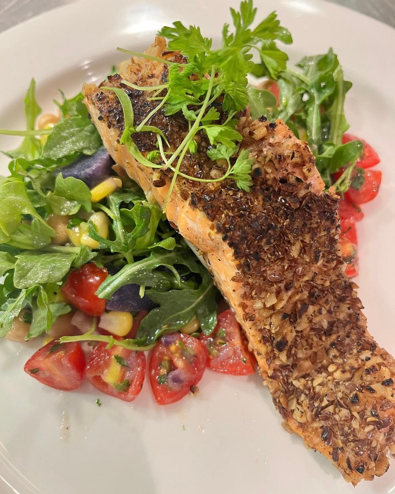
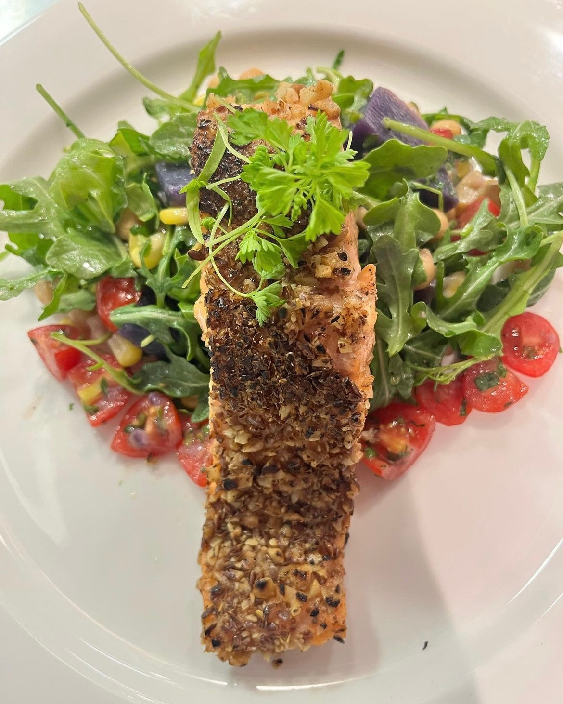

Salmon Entree


Walnut and flaxseed crusted salmon with purple potatoes and arugula salad
For those closely watching their carbs or looking for something light!
Ingredients
- Salmon fillet
- Walnuts
- Flaxseed
- Arugula
- Cherry Tomatoes
- Corn
Cooking Instructions
- Preheat the oven to 350˚. Place the walnuts on a sheet pan and cook until lightly toasted, about 8 minutes.
- Transfer the walnuts to a cutting board and when cool enough to handle, roughly chop and set aside.
- Increase the oven temperature to 400˚. Line a sheet pan with foil. Pat the fish fillets dry with paper towels. Evenly coat each salmon fillet with 1/2 tablespoon of the mustard. Season the fillets on all sides with salt and pepper and then sprinkle 1/2 tablespoon of the flaxseed on top of each piece of fish, gently pressing them into the flesh.
- Place the fish on the lined sheet pan and drizzle each fillet with 1 tablespoon of the olive oil. Transfer to the oven and bake until the fish reaches an internal temperature of 125˚in 10mins.
- Meanwhile, in a medium bowl, whisk together the remaining olive oil, rice vinegar, and sugar. Add the walnuts (toasted), cooked purple potatoes, tomatoes diced, parsley, red onion and arugula and toss together. Season with salt and white pepper.
- When the fish is done, remove it from the oven, top each piece with a generous amount of salad and serve.